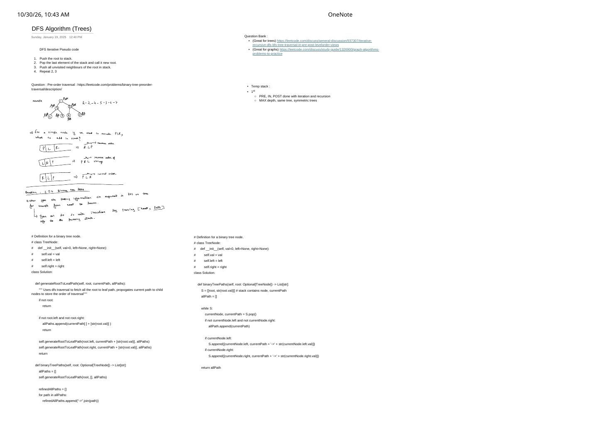

DFS Algorithm on Trees: LIFO Preorder Push Rule, State Bundling (LC 257) & Question Bank
Expanded from handwritten competitive coding study note: 02_DFS_Algorithm_Trees.pdf · View original handwritten pages
1. Concept & Generic 4-Step Iterative DFS Skeleton
Recursive DFS hides its backtracking bookkeeping inside the language's call stack. Whenever $N$ can reach $10^5$ on a skewed tree (risking stack overflow in Python or tight stack limits in contests) or when an interviewer asks for an explicit-stack translation, we replace recursion with an explicit LIFO (Last-In, First-Out) stack:
DFS Iterative Pseudocode (From Top-Left of Page 1)
- Push the
rootonto stack $S$. - Pop the last (top) element of $S$ and call it the current root.
- Push all unvisited neighbors (or non-null children on a binary tree) of the current root onto $S$.
- Repeat steps 2 and 3 until $S$ becomes empty.
Notice why binary trees simplify step 3: because directed parent-to-child links form a directed acyclic tree with in-degree $1$ for every non-root vertex, moving strictly from node to node->left and node->right can never revisit an ancestor or cross to a sibling—no visited array is needed!
2. Preorder Traversal (LC 144) & The LIFO Push-Order Proof
In LeetCode 144 (Binary Tree Preorder Traversal), we must visit every subtree in Parent → Left → Right (PLR) order. On a single 3-node family $(P, L, R)$, what happens under each stack push sequence? Page 1 derives all three cases explicitly:
| Stack Push Sequence (Bottom $\to$ Top) | LIFO Pop / Execution Order | Verdict for Preorder (PLR) |
|---|---|---|
[ P | L | R ] |
R → L → P |
Complete reverse of PLR (incorrect) |
[ L | R | P ] (or pop $P$, push $L$ then $R$) |
P → R → L |
Mirrored preorder — visits Right subtree before Left! |
[ R | L | P ] (pop $P$, push $R$ first, then $L$) |
P → L → R |
Exact left-to-right Preorder traversal ✓ |
Step-by-Step Stack Dry Run on the 7-Node Complete Binary Tree
right before left keeps the entire left subtree above node 3 on the stack.| Step | Popped Node | Pushed (Right then Left) | Stack $S$ (Bottom $\to$ Top) | Output Prefix |
|---|---|---|---|---|
| Init | — | push(1) | [1] | [] |
| 1 | 1 | push(3), push(2) | [3, 2] | [1] |
| 2 | 2 | push(5), push(4) | [3, 5, 4] | [1, 2] |
| 3 | 4 | leaf (none) | [3, 5] | [1, 2, 4] |
| 4 | 5 | leaf (none) | [3] | [1, 2, 4, 5] |
| 5 | 3 | push(7), push(6) | [7, 6] | [1, 2, 4, 5, 3] |
| 6 | 6 | leaf (none) | [7] | [1, 2, 4, 5, 3, 6] |
| 7 | 7 | leaf (none) | [] | [1, 2, 4, 5, 3, 6, 7] |
3. Passing Top-Down State in Iterative DFS: Binary Tree Paths (LC 257)
In recursive DFS, passing top-down information from root to leaves—such as running path strings, ancestor sums, or min/max ancestor bounds—happens via function parameters. How do we pass per-branch state cleanly in iterative DFS?
State-Bundling Principle (Handwritten Rule on Page 1)
"When you are passing information via arguments in DFS on trees (for example from root to leaves), you can do so with iteration by passing [root, path] info to the traversing stack." Bundling state directly inside each stack tuple isolates sibling branches automatically without manual backtracking pops.
Three Formulations for LeetCode 257 (Copy-per-Call → Stack Tuple → Backtracking Buffer)
- Recursive Copy-per-Call (Left code block in notes): Passes
currentPath + [str(root.val)]down each branch and joins with"->"intorefinedAllPathsat the end. Super readable, costs $\mathcal{O}(N \cdot H)$ list copies. - Iterative State-Bundled Stack (Right code block in notes): Pushes
[node, currentPathString]onto stackS. (Subtle detail in the scan: pushingleftthenrightpops right-to-left, which LC 257 accepts because "any order" is allowed; pushingrightbeforeleftbelow preserves left-to-right leaf order!) - Optimal Backtracking Buffer (C++ Contest Idiom): Mutates a single shared
vector<int> pathwithpush_backon entry andpop_backon exit—reducing auxiliary working space to $\mathcal{O}(H)$ and formatting strings only at leaves!
# Formulation 1 & 2 from the Handwritten Notes (Python)
class Solution:
# 1. Recursive DFS with argument propagation
def binaryTreePaths_recursive(self, root: Optional[TreeNode]) -> List[str]:
allPaths: List[List[str]] = []
def dfs(node: Optional[TreeNode], currentPath: List[str]) -> None:
if not node:
return
if not node.left and not node.right:
allPaths.append(currentPath + [str(node.val)])
return
nextPath = currentPath + [str(node.val)]
dfs(node.left, nextPath)
dfs(node.right, nextPath)
dfs(root, [])
refinedAllPaths = ["->".join(path) for path in allPaths]
return refinedAllPaths
# 2. Iterative Stack DFS bundling [node, currentPath]
def binaryTreePaths(self, root: Optional[TreeNode]) -> List[str]:
if not root:
return []
S = [(root, str(root.val))] # stack contains (node, currentPath)
allPath: List[str] = []
while S:
currentNode, currentPath = S.pop()
if not currentNode.left and not currentNode.right:
allPath.append(currentPath)
# Push right first so left-to-right leaf order is preserved
if currentNode.right:
S.append((currentNode.right, currentPath + "->" + str(currentNode.right.val)))
if currentNode.left:
S.append((currentNode.left, currentPath + "->" + str(currentNode.left.val)))
return allPath// Formulation 3: Optimal Shared-Buffer Backtracking DFS + Iterative C++ Variant
class Solution {
void dfs(TreeNode* node, vector<int>& buf, vector<string>& ans) {
if (!node) return;
buf.push_back(node->val);
if (!node->left && !node->right) {
string s = to_string(buf[0]);
for (size_t i = 1; i < buf.size(); ++i) {
s += "->" + to_string(buf[i]);
}
ans.push_back(move(s));
} else {
dfs(node->left, buf, ans);
dfs(node->right, buf, ans);
}
buf.pop_back(); // O(1) backtrack!
}
public:
vector<string> binaryTreePaths(TreeNode* root) {
vector<string> ans;
vector<int> buf;
dfs(root, buf, ans);
return ans;
}
};4. Study Sheet Milestones: Iterative Pre/In/Post & Structural Checks
The top-right column of Page 1 lists the foundational tree checklist: mastering Preorder, Inorder, and Postorder both recursively and iteratively, followed by Maximum Depth (LC 104), Same Tree (LC 100), and Symmetric Tree (LC 101):
// Compact C++ Reference for the Right-Column Study Milestones
// A. Iterative Inorder (Left -> Root -> Right) via "go-left" pointer + stack
vector<int> inorderTraversal(TreeNode* root) {
vector<int> res;
stack<TreeNode*> st;
TreeNode* curr = root;
while (curr || !st.empty()) {
while (curr) { st.push(curr); curr = curr->left; }
curr = st.top(); st.pop();
res.push_back(curr->val);
curr = curr->right;
}
return res;
}
// B. Iterative Postorder (Left -> Right -> Root) via reversed (Root -> Right -> Left)
vector<int> postorderTraversal(TreeNode* root) {
if (!root) return {};
vector<int> res;
stack<TreeNode*> st;
st.push(root);
while (!st.empty()) {
TreeNode* curr = st.top(); st.pop();
res.push_back(curr->val);
if (curr->left) st.push(curr->left); // Push LEFT first -> pops R before L!
if (curr->right) st.push(curr->right);
}
reverse(res.begin(), res.end()); // Reverse PRL -> LRP!
return res;
}
// C. Max Depth (LC 104), Same Tree (LC 100) & Symmetric Tree (LC 101)
int maxDepth(TreeNode* r) { return r ? 1 + max(maxDepth(r->left), maxDepth(r->right)) : 0; }
bool isSameTree(TreeNode* p, TreeNode* q) {
if (!p || !q) return p == q;
return p->val == q->val && isSameTree(p->left, q->left) && isSameTree(p->right, q->right);
}
bool isMirror(TreeNode* a, TreeNode* b) {
if (!a || !b) return a == b;
return a->val == b->val && isMirror(a->left, b->right) && isMirror(a->right, b->left);
}
bool isSymmetric(TreeNode* root) { return !root || isMirror(root->left, root->right); }- Curated Study Links from the Note: Iterative & Recursive DFS/BFS Tree Traversal Views · Graph Algorithms Problems to Practice.
5. Complexity Proof & Key Edge Cases
- Traversal Time Complexity (Pre/In/Post, LC 100/101/104): $\mathcal{O}(N)$ — Every vertex is pushed once and popped once ($\le 2N$ stack operations at $\mathcal{O}(1)$ each).
- Traversal Auxiliary Space: $\mathcal{O}(H)$ — At any moment, the stack holds at most one right-child sibling per ancestor along the active root-to-node path, bounded by tree height $H$ ($\mathcal{O}(\log N)$ on balanced trees, $\mathcal{O}(N)$ on skewed vines).
- LC 257 Output-Sensitive Cost: A tree can have up to $\lceil N/2 \rceil$ leaves each of path length $\mathcal{O}(H)$, so building the output strings takes $\mathcal{O}(N \cdot H)$ in the worst case (e.g., a broomstick of length $N/2$ feeding a complete binary tree of size $N/2$ yields $\Theta(N^2)$ total characters).
- Empty Root (
root == nullptr): Always guardif (!root) return {};before seedingS = [root], otherwiseroot->valdereferences null! - Single-Node Tree (
[1]) in LC 257: Root is immediately a leaf (!left && !right), returning["1"]with zero"->"arrows. - Multi-Digit & Negative Node Values (
-100 <= Node.val <= 100): Never pop a fixed 3 characters during string backtracking ("->X"breaks on"->-100"!); backtrack an integervector<int>or recordsize_t prevLen = s.size(); ... s.resize(prevLen);.
From the Handwritten Notes
View original handwritten page — Iterative DFS Pseudocode, Preorder LIFO Proof, Question Bank & LC 257 Code (Page 1)


02_DFS_Algorithm_Trees.pdf: 4-step iterative DFS pseudocode, PLR stack push-order proof, LeetCode study links & milestones, and side-by-side recursive vs. iterative Python solutions for LC 257.